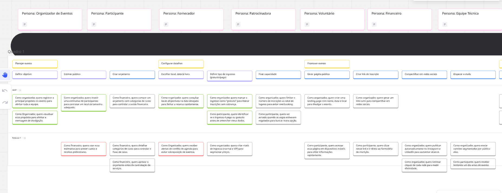
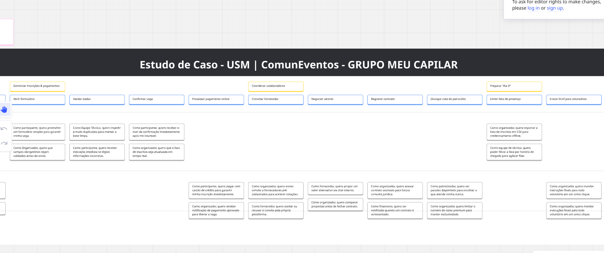
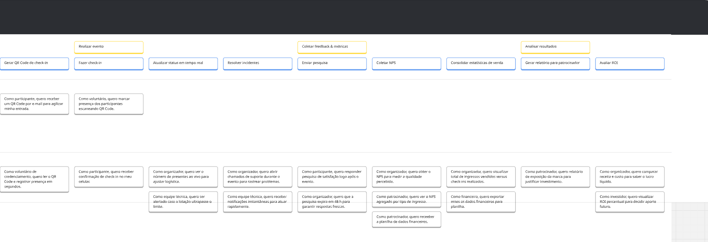

1 Estudo de Caso - USM | ComunEventos - GRUPO MEU CAPILAR
1.1. Sobre o User Story Mapping
O User Story Mapping (USM) é uma técnica visual e colaborativa voltada para o desenvolvimento de software, que tem como objetivo organizar e priorizar histórias de usuário de forma estruturada e estratégica. Criada por Jeff Patton, essa abordagem ajuda as equipes a construírem um mapa que representa a jornada do usuário, mostrando como ele interage com o produto ao longo do tempo.
No USM, as atividades principais dos usuários são organizadas em uma linha do tempo horizontal, enquanto abaixo delas são distribuídas histórias menores e tarefas relacionadas, ordenadas por prioridade. Essa estrutura facilita a identificação das funcionalidades mais importantes para atingir os objetivos do negócio e resolver as necessidades dos usuários.
Além de apoiar o planejamento de entregas e a definição de prioridades, o User Story Mapping oferece uma visão ampla e compartilhada do produto. Ele promove a colaboração entre times multidisciplinares e stakeholders, mostrando claramente como cada funcionalidade impacta na experiência do usuário. A técnica também é eficaz para identificar lacunas, redundâncias ou fluxos desnecessários, contribuindo para um backlog mais alinhado com a estratégia do projeto.
Por ser flexível e iterativa, a técnica se adapta bem a metodologias ágeis, tornando-se ideal para projetos dinâmicos, centrados no cliente e em constante evolução.
1.2 User Story Mapping (USM) - ComunEventos
Nome: ComunEventos Tipo: Plataforma digital para gestão de eventos comunitários
O Quê
- Consolida múltiplas ferramentas de organização em um único sistema
- Oferece solução acessível financeiramente
- Proporciona experiência simplificada para organizadores e participantes
Problemas resolvidos: - Fragmentação no uso de ferramentas - Barreiras financeiras para organizadores - Baixo engajamento de participantes
Por Quê
Benefícios:
- Eficiência na organização de eventos
- Maior engajamento dos participantes
- Facilita colaboração entre stakeholders
- Promove impacto comunitário
Quem
Personas principais:
- Organizador de Eventos
- Participante
- Fornecedor
- Patrocinador
- Voluntário
- Financeiro
- Equipe Técnica
Estudo de Caso - USM | ComunEventos
Personas
- Organizador de Eventos
- Participante
- Fornecedor
- Patrocinadora
- Voluntário
- Financeiro
- Equipe Técnica
Módulo: Planejar Evento
Tarefas
- Definir objetivo
- Estimar público
- Criar orçamento
MVP
- Como organizador, quero registrar o principal propósito do evento para alinhar toda a equipe.
- Como organizador, quero visualizar esse propósito para alinhar a mensagem de divulgação.
- Como organizador, quero inserir uma estimativa de participantes para contratar um local de tamanho adequado.
Módulo: Configurar Detalhes
Tarefas
- Escolher local, data e hora
- Definir tipo de ingresso (gratuito/pago)
- Fixar capacidade
MVP
- Como financeiro, quero compor um orçamento com categorias de custo para controlar a saúde financeira.
- Como organizador, quero consultar locais disponíveis na data desejada para fechar a reserva rapidamente.
- Como organizador, quero marcar o ingresso como "gratuito" para liberar inscrições sem cobrança.
- Como participante, quero identificar se o ingresso é pago ou gratuito antes de preencher meus dados.
Módulo: Promover Evento
Tarefas
- Gerar página pública
- Criar link de inscrição
- Compartilhar em redes sociais
- Disparar e-mails
MVP
- Como organizador, quero limitar o número de inscrições ao total de lugares para evitar overbooking.
- Como organizador, quero criar uma landing page com nome, data e local para divulgar o evento.
- Como organizador, quero gerar um link curto para compartilhar em redes sociais.
- Como participante, quero ser avisado quando as vagas estiverem esgotadas para buscar outra opção.
- Como organizador, quero rastrear cliques de cada rede para medir efetividade.
- Como participante, quero receber lembrete um dia antes do evento.
Módulo: Gerenciar Inscrições & Pagamentos
Tarefas
- Abrir formulário
- Validar dados
- Confirmar vaga
- Processar pagamento online
MVP
- Como participante, quero preencher um formulário simples para garantir minha vaga.
- Como organizador, quero que campos obrigatórios sejam validados antes do envio.
- Como equipe técnica, quero impedir e-mails duplicados para manter a base limpa.
- Como participante, quero receber e-mail de confirmação imediatamente após me inscrever.
- Como organizador, quero que a lista de inscritos seja atualizada em tempo real.
Módulo: Coordenar Colaboradores
Tarefas
- Convidar fornecedor
- Negociar valores
- Registrar contrato
MVP
- Como organizador, quero enviar convite a fornecedores pré-cadastrados para acelerar cotações.
- Como fornecedor, quero aceitar ou recusar o convite pela própria plataforma.
- Como fornecedor, quero propor um valor alternativo via chat interno.
- Como organizador, quero anexar contrato assinado para futura consulta jurídica.
- Como organizador, quero comparar propostas antes de fechar contrato.
- Como financeiro, quero ser notificado quando um contrato é acrescentado.
Módulo: Preparar “Dia D”
Tarefas
- Divulgar cota de patrocínio
- Emitir lista de presença
- Enviar brief para voluntários
MVP
- Como organizador, quero exportar a lista de inscritos em CSV para credenciamento offline.
- Como equipe técnica, quero poder filtrar a lista por horário de chegada para agilizar filas.
- Como patrocinador, quero ver pacotes disponíveis para escolher o que atenda minha marca.
- Como patrocinador, quero relatório de exposição da marca para justificar investimento.
- Como organizador, quero limitar o número de cotas premium para manter exclusividade.
- Como organizador, quero mandar instruções finais para todo voluntário em um único clique.
Módulo: Realizar Evento
Tarefas
- Gerar QR Code de check-in
- Fazer check-in
- Atualizar status em tempo real
- Resolver incidentes
MVP
- Como participante, quero receber um QR Code por e-mail para agilizar minha entrada.
- Como voluntário, quero marcar presença dos participantes escaneando QR Code.
- Como voluntário de credenciamento, quero ler o QR Code e registrar presença em segundos.
- Como participante, quero receber confirmação de check-in no meu celular.
- Como organizador, quero ver o número de presentes ao vivo para ajustar logística.
- Como equipe técnica, quero ser alertada caso a lotação ultrapasse o limite.
- Como equipe técnica, quero receber notificações instantâneas para atuar rapidamente.
Módulo: Coletar Feedback & Métricas
Tarefas
- Enviar pesquisa
- Coletar NPS
- Consolidar estatísticas de venda
MVP
- Como participante, quero responder pesquisa de satisfação logo após o evento.
- Como organizador, quero obter o NPS para medir a qualidade percebida.
- Como organizador, quero ver o NPS agrupado por tipo de ingresso.
- Como patrocinador, quero ver o NPS agregado por tipo de ingresso.
- Como patrocinador, quero receber a planilha de dados financeiros.
- Como financeiro, quero exportar esses dados para planilha.
Módulo: Analisar Resultados
Tarefas
- Gerar relatório para patrocinador
- Avaliar ROI
MVP
- Como organizador, quero visualizar total de ingressos vendidos versus check-ins realizados.
- Como organizador, quero comparar receita e custo para saber o lucro líquido.
- Como investidor, quero visualizar ROI percentual para decidir aporte
Imagens do User Story Map (Miro)
Aqui estão as imagens do User Story Map, inseridas como figuras:


